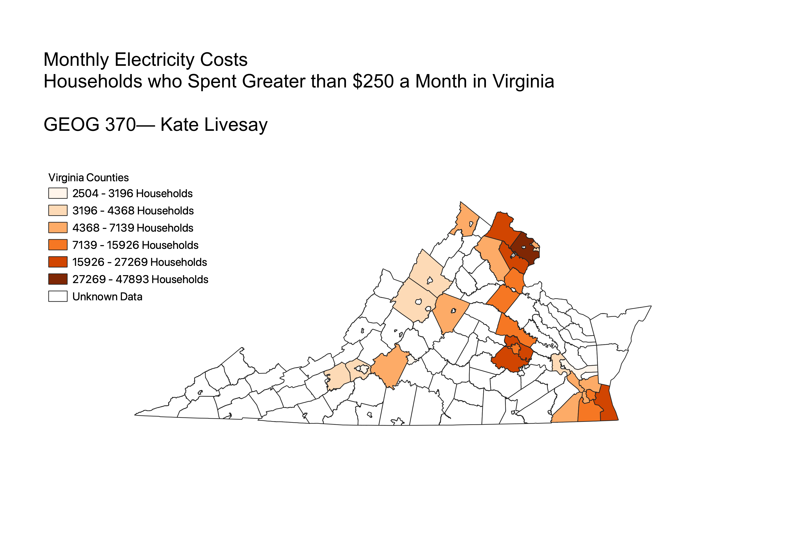

Homework 6: Census data choropleth
Kate Livesay
This map displays households that spent more than $250 per month on electricity bills. The greatest number of households that spent more than $250 per month on electricity bills are located near the DC area. This data was found on the government census website, using the filters of Virginia counties as well as the the topic of Health, and then clicking on Expenses. This data set did not contain information for all counties or cities, hence the null values being represented by the white outline of the county.

Data used for this project
CSV dataset
Link to data from census
VA Counties GeoJSON on GitHub